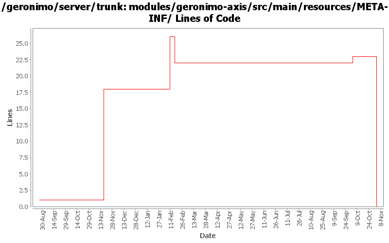

[root]/modules/geronimo-axis/src/main/resources/META-INF

| Author | Changes | Lines of Code | Lines per Change |
|---|---|---|---|
| Totals | 9 (100.0%) | 30 (100.0%) | 3.3 |
| kevan | 1 (11.1%) | 18 (60.0%) | 18.0 |
| dblevins | 1 (11.1%) | 8 (26.7%) | 8.0 |
| ccardona | 2 (22.2%) | 3 (10.0%) | 1.5 |
| djencks | 1 (11.1%) | 1 (3.3%) | 1.0 |
| prasad | 1 (11.1%) | 0 (0.0%) | 0.0 |
| jgenender | 1 (11.1%) | 0 (0.0%) | 0.0 |
| jdillon | 2 (22.2%) | 0 (0.0%) | 0.0 |
GERONIMO-3565. Modules distributed amongst framework/modules and plugins
0 lines of code changed in 1 file:
GERONIMO-3496 assemble servers out of plugins
1 lines of code changed in 1 file:
Fix jar access and parent for axis
0 lines of code changed in 1 file:
Ported Axis1 integration
8 lines of code changed in 1 file:
GERONIMO-2498 : Geronimo should use the full javamail uber jar instead of just the spec jar + provider jar.
- Replaced geronimo-javamail_1.4_spec with geronimo-javamail_1.4_mail
2 lines of code changed in 1 file:
GERONIMO-2635 : Need to upgrade to JavaMail 1.4 (JSR 919) and JavaBeans Activation Framework 1.1 (JSR 925) for JEE 5 compliance.
Changes:
- Updated <artifactId> and <version>
1 lines of code changed in 1 file:
GERONIMO-2537 Integrating patch supplied by Jay McHugh. Thanks Jaymvn -Ptools geronimo:start! Adds apache src header to files that were missing appropriate license information. This is everything except applications/console.
18 lines of code changed in 1 file:
Apply standard properties
0 lines of code changed in 2 files: